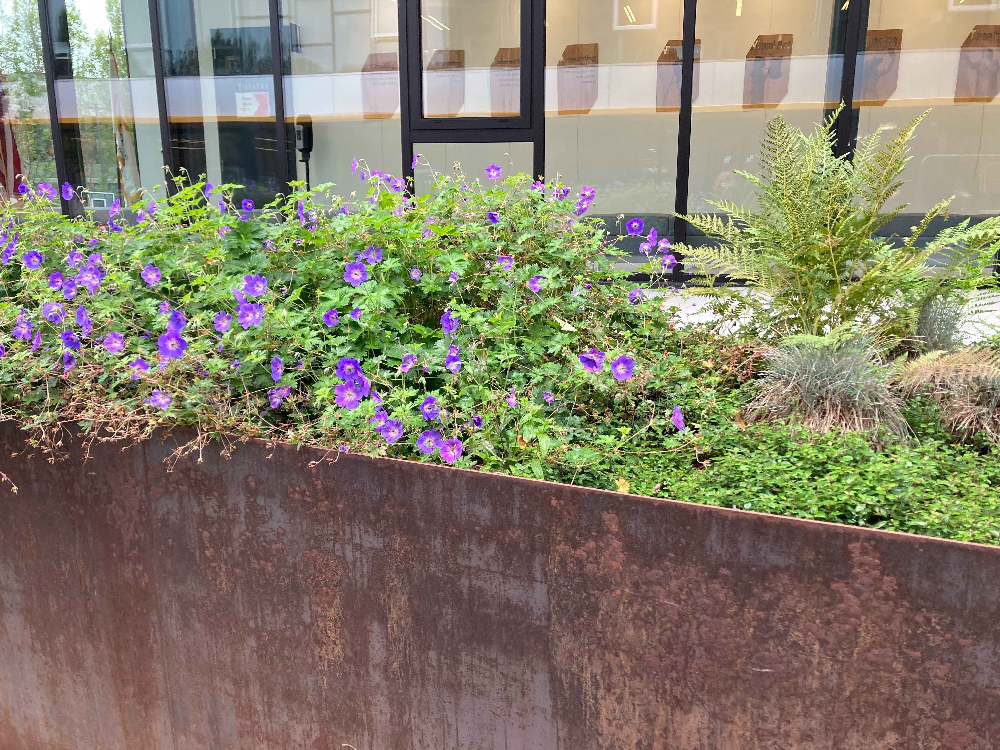

The color sceheme I'm using is purple and green, which are complementary colors. The feeling I am trying to convey is one of calming nature, but with some deeper more exiting highlights. The green is meant to be the calming color, while the purple adds another more interesting element that really pops from the background.
This is the image I got these colors from:
